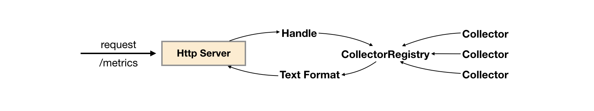

使用Client Java构建Exporter程序
client_java是Prometheus针对JVM类开发语言的client library库，我们可以直接基于client_java用户可以快速实现独立运行的Exporter程序，也可以在我们的项目源码中集成client_java以支持Prometheus。
自定义Collector
在client_java的simpleclient模块中提供了自定义监控指标的核心接口。
如果使用Gradle作为项目构建工具，可以通过向build.gradle添加simpleclient依赖：
compile 'io.prometheus:simpleclient:0.3.0'
当无法直接修改监控目标时，可以通过自定义Collector的方式，实现对监控样本收集，该收集器需要实现collect()方法并返回一组监控样本，如下所示：
public class YourCustomCollector extends Collector {
public List<MetricFamilySamples> collect() {
List<MetricFamilySamples> mfs = new ArrayList<MetricFamilySamples>();
String metricName = "my_guage_1";
// Your code to get metrics
MetricFamilySamples.Sample sample = new MetricFamilySamples.Sample(metricName, Arrays.asList("l1"), Arrays.asList("v1"), 4);
MetricFamilySamples.Sample sample2 = new MetricFamilySamples.Sample(metricName, Arrays.asList("l1", "l2"), Arrays.asList("v1", "v2"), 3);
MetricFamilySamples samples = new MetricFamilySamples(metricName, Type.GAUGE, "help", Arrays.asList(sample, sample2));
mfs.add(samples);
return mfs;
}
}
这里定义了一个名为my_guage的监控指标，该监控指标的所有样本数据均转换为一个MetricFamilySamples.Sample实例，该实例中包含了该样本的指标名称、标签名数组、标签值数组以及样本数据的值。
监控指标my_guage的所有样本值，需要持久化到一个MetricFamilySamples实例中，MetricFamilySamples指定了当前监控指标的名称、类型、注释信息等。需要注意的是MetricFamilySamples中所有样本的名称必须保持一致，否则生成的数据将无法符合Prometheus的规范。
直接使用MetricFamilySamples.Sample和MetricFamilySamples的方式适用于当某监控指标的样本之间的标签可能不一致的情况，例如，当监控容器时，不同容器实例可能包含一些自定义的标签，如果需要将这些标签反应到样本上，那么每个样本的标签则不可能保持一致。而如果所有样本的是一致的情况下，我们还可以使用client_java针对不同指标类型的实现GaugeMetricFamily，CounterMetricFamily，SummaryMetricFamily等，例如：
class YourCustomCollector2 extends Collector {
List<MetricFamilySamples> collect() {
List<MetricFamilySamples> mfs = new ArrayList<MetricFamilySamples>();
// With no labels.
mfs.add(new GaugeMetricFamily("my_gauge_2", "help", 42));
// With labels
GaugeMetricFamily labeledGauge = new GaugeMetricFamily("my_other_gauge", "help", Arrays.asList("labelname"));
labeledGauge.addMetric(Arrays.asList("foo"), 4);
labeledGauge.addMetric(Arrays.asList("bar"), 5);
mfs.add(labeledGauge);
return mfs;
}
}
使用HTTP Server暴露样本数据
client_java下的simpleclient_httpserver模块实现了一个简单的HTTP服务器，当向该服务器发送获取样本数据的请求后，它会自动调用所有Collector的collect()方法，并将所有样本数据转换为Prometheus要求的数据输出格式规范。如果用户使用了Gradle构建项目，可以添加以下依赖：
compile 'io.prometheus:simpleclient_httpserver:0.3.0'
添加依赖之后，就可以在Exporter程序的main方法中启动一个HTTPServer实例：
public class CustomExporter {
public static void main(String[] args) throws IOException {
HTTPServer server = new HTTPServer(1234);
}
}
而在启动之前，别忘记调用Collector的register()方法。否则HTTPServer是找不到任何的Collector实例的：
new YourCustomCollector().register();
new YourCustomCollector2().register();
运行CustomExporter并访问http://127.0.0.1:1234/metrics，即可获取到以下数据：
$ curl http://127.0.0.1:1234/metrics
# HELP my_gauge help
# TYPE my_gauge gauge
my_gauge 42.0
# HELP my_other_gauge help
# TYPE my_other_gauge gauge
my_other_gauge{labelname="foo",} 4.0
my_other_gauge{labelname="bar",} 5.0
# HELP my_guage help
# TYPE my_guage gauge
my_guage{l1="v1",} 4.0
my_guage{l1="v1",l2="v2",} 3.0
当然HTTPServer中并不存在什么黑魔法，其内部实现如下所示：

当调用Collector实例register()方法时，会将该实例保存到CollectorRegistry当中，CollectorRegistry负责维护当前系统中所有的Collector实例。 HTTPServer在接收到HTTP请求之后，会从CollectorRegistry中拿到所有的Collector实例，并调用其collect()方法获取所有样本，最后格式化为Prometheus的标准输出。
除了直接使用HTTPServer以外暴露样本数据以外，client_java中还提供了对Spring Boot、Spring Web以及Servlet的支持。
使用内置的Collector
通过client_java中定义的标准接口，用户可以快速实现自己的监控数据收集器，并通过HTTPServer将样本数据输出给Prometheus。除了提供接口规范以外，client_java还提供了多个内置的Collector模块，以simpleclient_hotspot为例，该模块中内置了对JVM虚拟机运行状态（GC，内存池，JMX，类加载，线程池等）数据的Collector实现，用户可以通过在Gradle中添加以下依赖，导入simpleclient_hotspot：
compile 'io.prometheus:simpleclient_hotspot:0.3.0'
通过调用io.prometheus.client.hotspot.DefaultExport的initialize方法注册该模块中所有的Collector实例：
DefaultExports.initialize();
重新运行CustomExporter，并获取样本数据：
$ curl http://127.0.0.1:1234/metrics
# HELP jvm_buffer_pool_used_bytes Used bytes of a given JVM buffer pool.
# TYPE jvm_buffer_pool_used_bytes gauge
jvm_buffer_pool_used_bytes{pool="direct",} 8192.0
jvm_buffer_pool_used_bytes{pool="mapped",} 0.0
除了之前自定义的监控指标以外，在响应内容中还会得到当前JVM的运行状态数据。在client_java项目中除了使用内置了对JVM监控的Collector以外，还实现了对Hibernate，Guava Cache，Jetty，Log4j、Logback等监控数据收集的支持。用户只需要添加相应的依赖，就可以直接进行使用。
在业务代码中进行监控埋点
在client_java中除了使用Collector直接采集样本数据以外，还直接提供了对Prometheus中4种监控类型的实现分别是：Counter、Gauge、Summary和Histogram。 基于这些实现，开发人员可以非常方便的在应用程序的业务流程中进行监控埋点。
简单类型Gauge和Counter
以Gauge为例，当我们需要监控某个业务当前正在处理的请求数量，可以使用以下方式实现：
public class YourClass {
static final Gauge inprogressRequests = Gauge.build()
.name("inprogress_requests").help("Inprogress requests.").register();
void processRequest() {
inprogressRequests.inc();
// Your code here.
inprogressRequests.dec();
}
}
Gauge继承自Collector，registoer()方法会将该Gauge实例注册到CollectorRegistry中。这里创建了一个名为inprogress_requests的监控指标，其注释信息为"Inprogress requests"。
Gauge对象主要包含两个方法inc()和dec()，分别用于计数器+1和-1。
如果监控指标中还需要定义标签，则可以使用Gauge构造器的labelNames()方法，声明监控指标的标签，同时在样本计数时，通过指标的labels()方法指定标签的值，如下所示：
public class YourClass {
static final Gauge inprogressRequests = Gauge.build()
.name("inprogress_requests")
.labelNames("method")
.help("Inprogress requests.").register();
void processRequest() {
inprogressRequests.labels("get").inc();
// Your code here.
inprogressRequests.labels("get").dec();
}
}
Counter与Gauge的使用方法一致，唯一的区别在于Counter实例只包含一个inc()方法，用于计数器+1。
复杂类型Summary和Histogram
Summary和Histogram用于统计和分析样本的分布情况。如下所示，通过Summary可以将HTTP请求的字节数以及请求处理时间作为统计样本，直接统计其样本的分布情况。
class YourClass {
static final Summary receivedBytes = Summary.build()
.name("requests_size_bytes").help("Request size in bytes.").register();
static final Summary requestLatency = Summary.build()
.name("requests_latency_seconds").help("Request latency in seconds.").register();
void processRequest(Request req) {
Summary.Timer requestTimer = requestLatency.startTimer();
try {
// Your code here.
} finally {
receivedBytes.observe(req.size());
requestTimer.observeDuration();
}
}
}
除了使用Timer进行计时以外，Summary实例也提供了timer()方法，可以对线程或者Lamda表达式运行时间进行统计：
class YourClass {
static final Summary requestLatency = Summary.build()
.name("requests_latency_seconds").help("Request latency in seconds.").register();
void processRequest(Request req) {
requestLatency.timer(new Runnable() {
public abstract void run() {
// Your code here.
}
});
// Or the Java 8 lambda equivalent
requestLatency.timer(() -> {
// Your code here.
});
}
}
Summary和Histogram的用法基本保持一致，区别在于Summary可以指定在客户端统计的分位数，如下所示：
static final Summary requestLatency = Summary.build()
.quantile(0.5, 0.05) // 其中0.05为误差
.quantile(0.9, 0.01) // 其中0.01为误差
.name("requests_latency_seconds").help("Request latency in seconds.").register();
对于Histogram而言，默认的分布桶为[.005, .01, .025, .05, .075, .1, .25, .5, .75, 1, 2.5, 5, 7.5, 10]，如果需要指定自定义的桶分布，可以使用buckets()方法指定，如下所示：
static final Histogram requestLatency = Histogram.build()
.name("requests_latency_seconds").help("Request latency in seconds.")
.buckets(0.1, 0.2, 0.4, 0.8)
.register();
与PushGateway集成
对于一些短周期或者临时采集的样本数据，client_java还提供了对PushGateway的支持：
添加依赖：
compile 'io.prometheus:simpleclient_pushgateway:0.3.0'
如下所示，PushGateway的实现类可以从所有注册到defaultRegistry的Collector实例中获取样本数据并直接推送 到外部部署的PushGateway服务中。
public class PushGatewayIntegration {
public void push() throws IOException {
CollectorRegistry registry = CollectorRegistry.defaultRegistry;
PushGateway pg = new PushGateway("127.0.0.1:9091");
pg.pushAdd(registry, "my_batch_job");
}
}